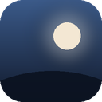

IdleDash
Een dashboard voor je extra scherm. Het verschijnt vanzelf zodra daar geen vensters meer staan, en verdwijnt weer als je er iets naartoe sleept.
Downloaden voor WindowsVoor Windows 10 en 11. Gratis en open source.
Wat staat erop
- Klok, weer en een regenradar voor de komende twee uur
- Je afspraken uit Google Agenda, Apple iCloud en agenda-links, en afspraken toevoegen
- Je taken uit Google Taken
- Nieuws en RSS: NOS, BBC of elke website met een feed
- Foto's als diavoorstelling en een aftelklok
- Smarthome: Home Assistant, Philips Hue en Shelly, met groepen, kleur, wittint en helderheid
- Een melding als de deurbel gaat (via ntfy), met muziek pauzeren en een geluid
- Aandelen en crypto, snelkoppelingen naar apps en websites, en back-ups van je instellingen
- Je Spotify-playlists starten met één klik (Spotify Premium), en tegels voor Apple Music, YouTube Music en meer
- Vertrektijden en een treinkaart van je regio, ook in het buitenland
- Elke dag een feitje en vandaag in de geschiedenis
- Wat er speelt in Spotify of je browser, met bediening
- PC-stats, een focustimer en een nachtmodus die het scherm 's avonds dimt
- Thema's, ook met je eigen foto als achtergrond, in het Nederlands en Engels
Je kiest zelf welke onderdelen je ziet, waar ze staan en hoe ze eruitzien.
Je gegevens
Koppel je Google, dan vraagt IdleDash toegang om je agenda te lezen, afspraken toe te voegen die jij zelf invult, en je Google Taken te tonen en af te vinken. Alles blijft op je eigen pc: er is geen server van IdleDash die je gegevens ziet. Wachtwoorden en tokens worden versleuteld opgeslagen. Lees het privacybeleid.
In English
IdleDash is a free, open-source Windows dashboard for a spare monitor, available in English and Dutch. It appears when that monitor has no windows on it and shows the time, weather, your events from Google Calendar, Apple iCloud and calendar links, Google Tasks, news and RSS feeds, photos, countdowns, smart home controls with groups and colors, doorbell notifications via ntfy, stocks, shortcuts, backups, music controls and more. Google data is only used to display it on your own screen and to add the events and tasks you ask for; it never leaves your computer except to communicate directly with Google. See the privacy policy.